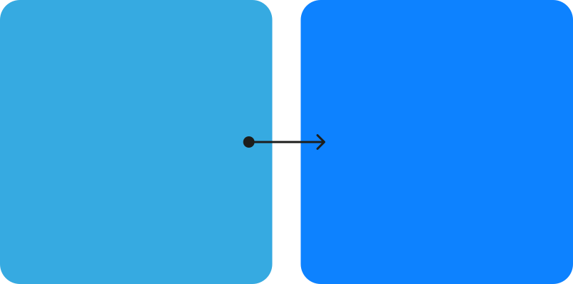
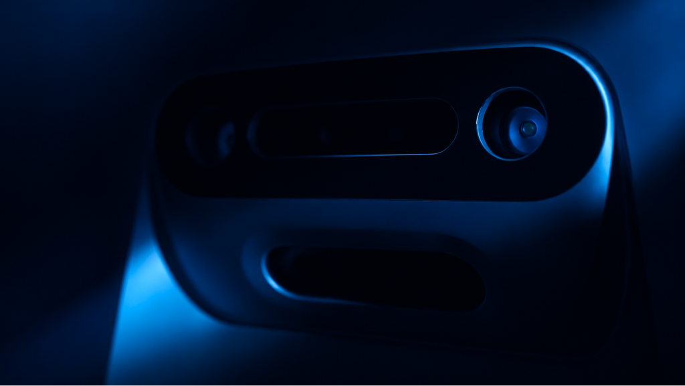
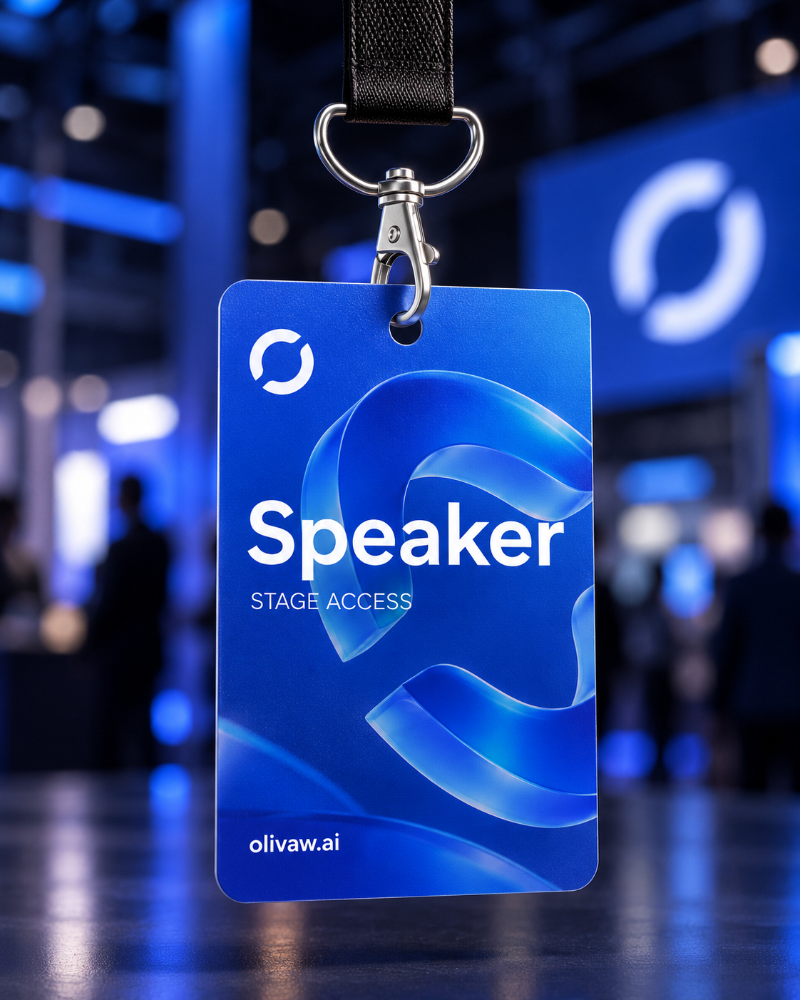
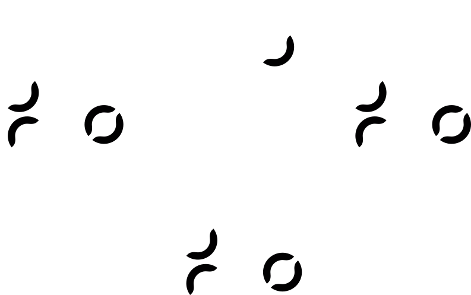
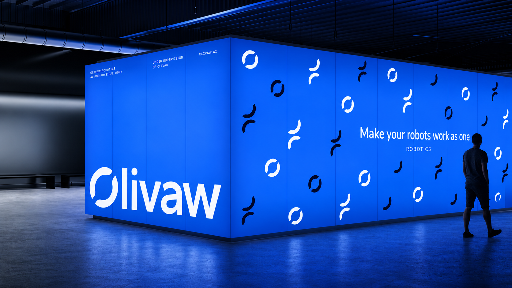
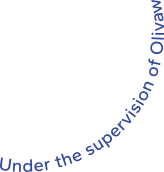
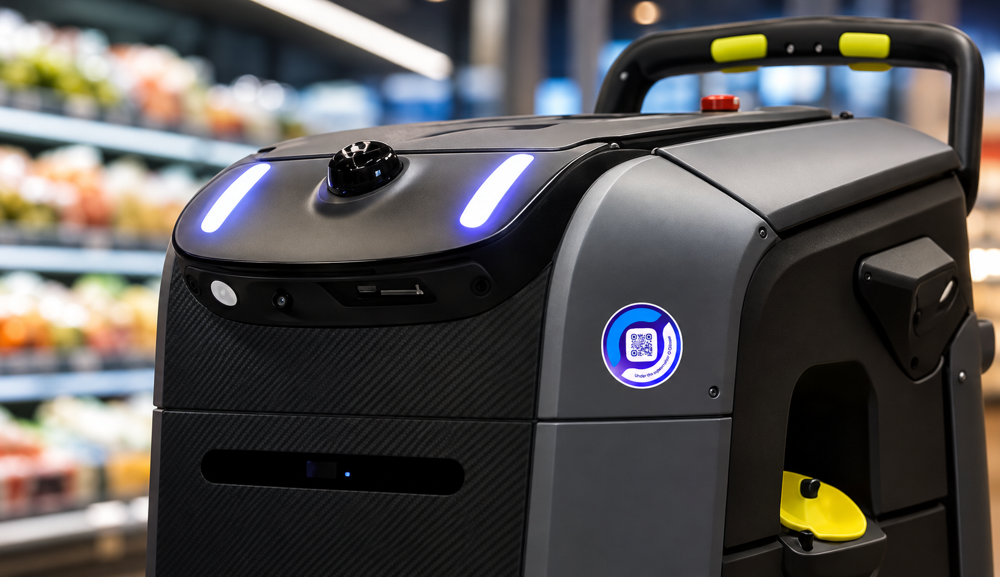
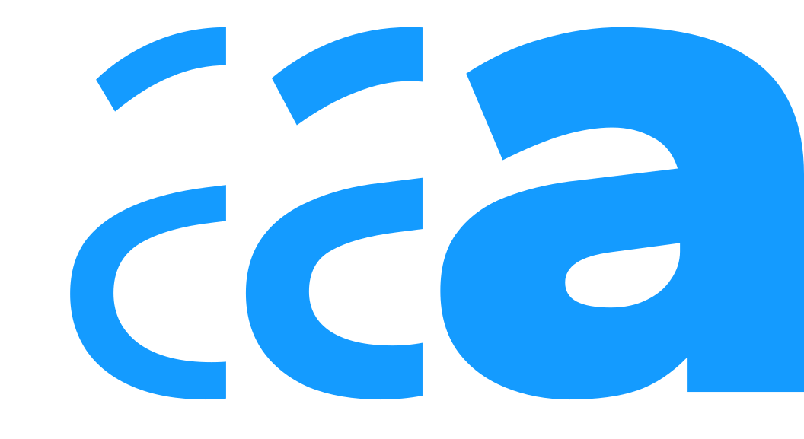

THE REFINEMENT
Building on what already works.
The current logo already has a strong foundation. Its distinctive split O is worth preserving.
It’s reminiscent of Yin and Yang, or a symbol of connection.
My proposal
I'd keep the original character while refining the logo's geometry and typography.
A rounder O and simpler letterforms would improve balance and readability, especially at smaller sizes.
Removing the tiny robotic “feet” from the V would also make the logo cleaner.
Logo and primary identity
BLUE COLOR
A cleaner blue.
The existing blue already gives Olivaw a technological feel. I'd make it slightly brighter and more vibrant for a cleaner, more confident look.

Primary identity


Alternative lockup
I also explored a bolder typographic version with a more prominent “Robotics”. It could work alongside the primary logo for exhibitions, campaigns, and other large-scale applications.
BRAND APPLICATIONS
How the identity works in the real world.
Olivaw doesn't manufacture robots
— it brings them together.
I wanted to see how the refreshed identity would look beyond the website, so I tried it on an exhibition stand, an event badge, and robot stickers.
The idea was to make the connection to Olivaw visible, even on robots from different manufacturers.





TYPEFACE EXPLORATION
Exploring Gantari for Olivaw.
For this concept, I'm testing Gantari — a modern sans-serif with a familiar, Helvetica-like feel. It's a promising direction for both the brand and product interfaces.
TYPOGRAPHY
Gantari
Its clean letterforms remain readable at different sizes, while the range of weights allows for bold headlines, compact labels, and data-heavy interfaces.
ABCDEFGHIJKLMNOPQRSTUVWXYZ
abcdefghijklmnopqrstuvwxyz
0123456789 !?@#$%&*()—+/-

01 / HEADLINE
AaGantari SemiBold / Display02 / EDITORIAL
AgGantari Regular / Body03 / MICRO TYPE
RBTUppercase / Navigation04 / DATA & UI
42Numerals / Interface